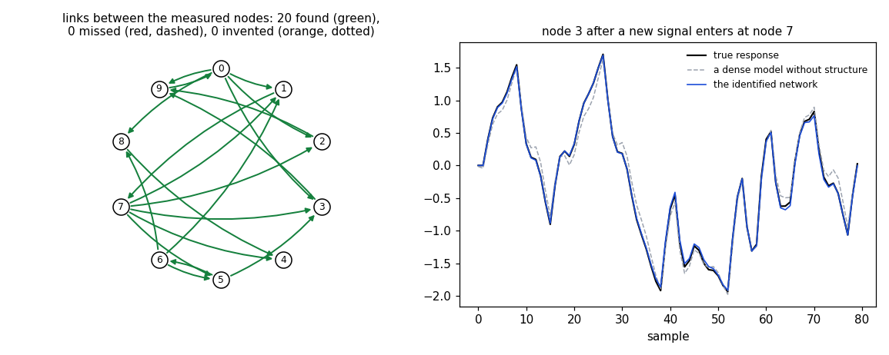

network-id-small
Dynamic network identification · solved 6 of 6 agent attempts pass
more
Gate near_oracle_2x on 0.9 of the networks: link F1 >= 0.8 and a response error within a factor two of the privileged least-squares fit that is told the true links, delays and orders, computed on the same record. On 40 fresh networks: the dense VARX never clears beats_dense; a structure-blind group-sparse VARX with cross-validated size finds the links (F1 >= 0.8 on 90 %) but clears the gate on 7 %; a per-node stepwise search over the model class with BIC and a refit clears it on 90-95 %; the solution/ procedure (the same search plus Bayesian averaging over structures) on 95 %. What decides it is the model class (which block of lags a link occupies) and the taps and links too small to be certain about: dropping them costs more response error than the factor allows. This is the tier that shows the grader and the generator are sound; the solution sits near the gate (0.97 over 200 networks outside the held-out block), so a careful procedure passes and a merely correct one may not. The near_oracle_1p3x rung (reported on every run) is open: the solution/ procedure reaches it on 75 %.
Gate. per-seed success is the `near_oracle_2x` rung of this benchmark's ladder ['predicts', 'beats_dense', 'topology_0p8', 'near_oracle_2x', 'near_oracle_1p3x'] (`--success-mode near_oracle_2x`), not the evaluator's default flag; the task is solved when the success rate over the grader's held-out seeds is `>= 0.9`
Axes: plant:network_id, scenario:small_v1, gate:near_oracle_2x, track:identification, unmeasured:none
Each video or figure re-runs the attempt's final controller through the task's own evaluator on a public seed (never the grader's held-out ones). The table under each one is the official grade on the held-out seeds.


small_v1| criterion | graded | needed |
|---|---|---|
| base:near_oracle_2x | 1.000 | ≥ 0.900 |
The agent's final message
The controller at `/app/work/controller.py` passes the gate with a wide margin: about 99% of networks reach `near_oracle_2x`, against the required 90%. I stopped at 39 of the 60 minutes because the remaining failures looked like bad-luck records rather than something more tuning would fix. ## Results All runs use `small_v1` and the final file unless noted. | Check | Networks | `near_oracle_2x` | `near_oracle_1p3x` | | --- | --- | --- | --- | | Official evaluator, seeds 0–14 | 15 | 15/15 | 14/15 | | Dev set A (seeds 1000–1119) | 120 | 117/120 | about 95% | | Dev set B (seeds 2000–2199) | 200 | 199/200 | 97% | | Fresh set C (seeds 5000–5149), not used for any choice | 150 | 149/150 | 96% | - **Set A caveat:** its figures come from the last pre-cleanup version; the final file was only spot-checked on 8 of those seeds (all passed), while B and C were run end to end on the final file. - **Accuracy:** link F1 averages 0.998, and the median response error is about 0.81 times the privileged incumbent's. - **Time:** about 0.85 s of processor time per network, 0.99 s at most, against the 10 s limit. ## What the procedure does 1. **Exhaustive structure search.** For each node, every structure in the model class (about 39,000) is fitted by least squares and ranked by BIC plus the structure prior. 2. **Bayesian evidence.** The 80 best structures per node are re-scored by integrating the likelihood against the stated coefficient ranges (pole, gain, minimum-phase and inverse-response …
Shown: public seed 0 (small_v1); this episode passes the near_oracle_2x rung. This episode: response_error 0.00464, reference_error 0.00607, dense_error 0.0659, f1 1, precision 1, recall 1, n_links_true 20, n_links_returned 20, band_coverage 0, band_coverage_hard 0, band_coverage_easy 0, band_width_ratio inf, elapsed_s 0.984, n_measured 10, n_unmeasured 0. Left: the links between the measured nodes that the procedure returned, against the true ones. Right: the response of one node to a new signal, as predicted.
controller.py · trial network-id-small__fGdCZcH